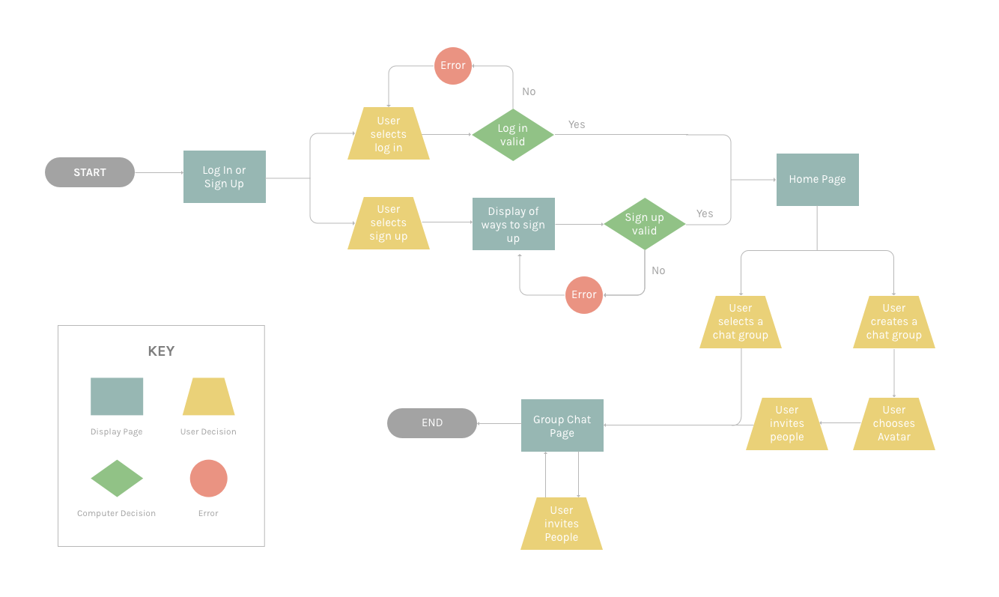
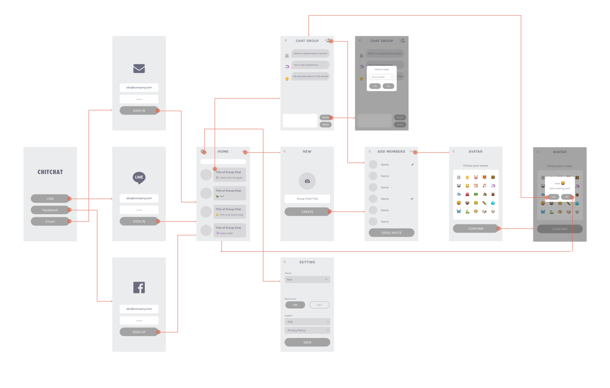

Overview
Japan’s working culture has been an huge issue and we needed to find a way to improve it.
This project started during my internship at LINE, with the aim to combat challenges LINE users are facing. As the designer on the team, my role was to use research to identify design opportunities, envision the preferred future, and translate it into screen designs.
Motivation
Japan's work culture is some of the worst in the world

A little before my internship starts, I saw a news about an employee of advertising monolith overworked that she became clinically depressed and jumped to her death on Christmas Day. She is one of the suspected thousands of deaths from work-related exhaustion each year. This is the issue that needs to be tackled, but what exactly is causing this tragedy?
Research
To gain an understanding of the current state, we researched more on the incidents from work exhaustion, and found out that most victims are young workers. This led us talk to a few young workers and I immediately got confirmation that they've experienced something similar before. Upon more probing, we found that there are following problems specifically.
Defining Goals
Find a common ground in user goals and business goals
LINE is the company that develops the most popular communication app in Japan. Since we discovered that one of the core problems is related to communication, we decided to focus on the problem. Based on the decision, we defined our goal to be, How might we help young workers become more comfortable speaking up in work environment?
Ideation
Brainstorming design solutions
Each member brainstormed ideas individually, and we gathered together to share our ideas. Through this process, we identified that we would want Chit Chat to be an anonymous chat app for teams.
Competitive Analysis
We looked into anonymous chat apps that are currently on the market. Main finding here was that they aren’t doing well. One app we looked into was called Yikyak, anonymous chat app, and it actually shut down recently because people are taking advantage of being anonymous. Therefore, a great deal of our effort was focused on avoiding this negativity.
User Flow & Wire Flow
We created user flow to convey my idea to my mentors. Based on the user flow, wire flow was generated.
Testing
We distributed our prototype to a team in LINE and asked them to use it for a day so we can see if Chit Chat is making a difference - solving the problem.

At the end of the day, we compared the number of messages sent on Chit Chat and immediately got confirmation that there are way more communication on Chit Chat than the usual group chat.
Improvement
What can we do to improve?
Although we could see Chit Chat was doing a great job, we also saw some improvements that can be made. From looking at the conversation on our prototype, we found out that the number of message increased when someone in the chat group made a joke or asked questions. However, when there aren’t any conversation starters, the chat group was inactive. This led us add two more features, chatbot & avatar.
Chatbot
To avoid the inactivity, we incorporated chatbot that sends messages when there were no activities for a certain amount of time. When the chatbot recognizes negative words, it sends messages to change the atmosphere of the conversation.
Avatar
To make the chat atmosphere more cheerful, we also decided to ask users choose their avatars (emoji).
Reflection
This is a project that I felt very passionate about while working on it because it tackles the meaningful problem of work culture in Japan. Although it might be just a tiny step towards solving this huge problem, I was able to gain many lessons. Here are few main lessons:
-
Always justify every decision I make. During this project, we had two mentors who always asked us "why" to our decisions, and it helped us make our abstract idea more concrete and move to the right direction.
-
User experience of chat app highly depends on what users actually talk. As a designer, my goal was to make their experience as positive as possible. However, I noticed that compared to other types of app, chat app is difficult because their experience relies on what users talk about and how each messages interact with.

Fun note:
Because this project had a very limited time frame, we spent everyday drinking lots of coffee but every time we purchased a coffee at LINE cafe, this is what we got! This really brought delight to us :)